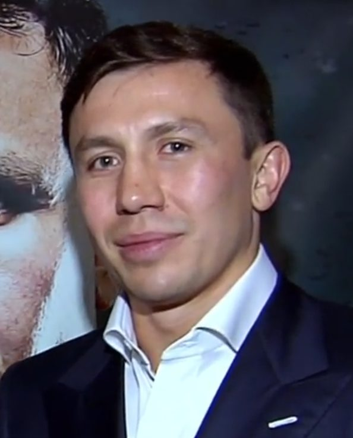

Федерация бокса России принята в полноправные члены World Boxing на конгрессе в Панаме
Делегаты четвертого ежегодного конгресса World Boxing большинством голосов предоставили России право голоса в преддверии Олимпиады-2028 в Лос-Анджелесе.

Федерация бокса России официально получила статус полноправного члена международной организации World Boxing. Решение было принято большинством голосов делегатов на четвертом ежегодном конгрессе организации, который прошел 20 ноября 2026 года в Панаме.
Данный вердикт наделяет Россию официальным правом голоса на будущих генеральных ассамблеях в соответствии с уставным принципом World Boxing «одна страна — один голос». Российскую делегацию в Панаме по поручению генерального секретаря Александра Беспутина представлял заместитель генерального секретаря Федерации бокса России Андрей Истомин.
«Самым главным результатом для нас стало принятие Федерации бокса России в World Boxing в качестве полноправного члена, за что проголосовало большинство стран», — подчеркнул Истомин.

От временного статуса к полноправному членству
Принятие России в статусе полноправного члена завершило восьмимесячный процедурный переход. World Boxing одобрила заявку Федерации бокса России еще в марте 2026 года, однако тогда организация получила статус одобренного члена (endorsed member) без права голоса.
Голосование в Панаме стало частью масштабного расширения организации: делегаты конгресса одобрили заявки 47 национальных федераций. В результате число полноправных членов с правом голоса в международной структуре достигло 170, еще одна федерация имеет статус ассоциированного члена.
Президент World Boxing, бывший абсолютный чемпион мира в среднем весе из Казахстана Геннадий Головкин, возглавляющий организацию, обратился к делегатам после завершения голосования.
«Сегодняшний день стал еще одной важнейшей вехой для World Boxing и будущего нашего вида спорта, — заявил Головкин. — Решения, принятые нашими федерациями-членами, подтверждают нашу общую приверженность принципу ставить интересы боксеров на первое место, укреплять нашу организацию и делать все возможное, чтобы бокс продолжал развиваться как авторитетный и уважаемый олимпийский вид спорта. Мне особенно приятно, что члены организации поддержали курс, который мы наметили в преддверии Олимпийских игр 2028 года в Лос-Анджелесе и на последующий период».
Управление и путь к Лос-Анджелесу-2028
Организация World Boxing была основана в апреле 2023 года национальными федерациями, искавшими альтернативную международную структуру, способную гарантировать долгосрочное сохранение бокса в программе Олимпийских игр после лишения признания Международной ассоциации бокса (IBA) со стороны МОК.
Полноправное членство полностью интегрирует Россию в систему управления World Boxing, включая выдвижение представителей в комитеты и участие в голосовании по уставным вопросам. Председатель тренерского совета Федерации бокса России Эдуард Кравцов в эфире «Матч ТВ» подчеркнул, что этот шаг восстанавливает статус-кво: «Мы были неполноправными членами в World Boxing, для России это было неприемлемо. Все встало на свои места».
Пока полноправное членство оформляет официальный статус России внутри управляющей структуры, олимпийские квалификационные турниры под эгидой World Boxing должны стартовать в 2027 году в рамках подготовки к Играм-2028 в Лос-Анджелесе.